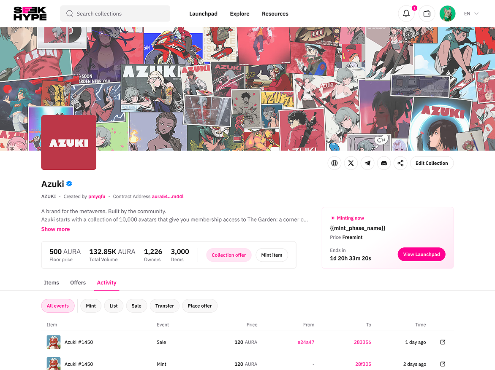
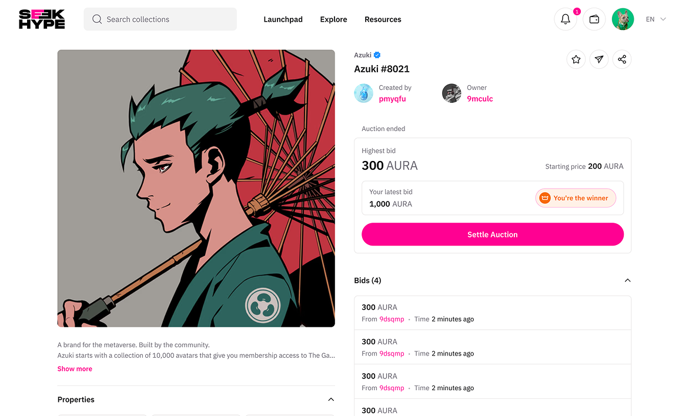

Overview
The problem
Six product surfaces, ten people, and no shared definition of what any of them were. Each surface was being specified by whichever engineer picked it up, and the design team was being consumed answering questions that should have been settled once.
What I did
Built the design function as an operating model rather than a service desk: one shared system, a written definition process with named accountabilities, and an explicit capacity allocation across the six surfaces.
When the platform changed underneath every surface in 2024, the re-plumbing was affordable. Aura shipped EVM compatibility in May 2024, and the ecosystem now reports 20+ dApps and 14.5M+ deployed contracts public · cumulative, measured after my exit.
What I owned, and what I didn't
Design leadership at a ten-person company is mostly a question of authority, so it is worth being exact about mine before anything else. Nothing below this line is a claim I can't answer questions about.
I owned
The design function: standards, the shared system, review, hiring and onboarding into the team, and — the one with real teeth — where design capacity went each cycle across six surfaces.
I drove, jointly
Product definition. What each surface was for, what it would and wouldn't do, and what "done" meant — worked out with engineering leads and the founders rather than handed down to them.
I framed, others decided
The platform calls. The EVM transition and the address-model trade-off were founder decisions. My contribution was making the options and their real costs legible enough that the decision could be made properly. See §04.
Six inconsistent surfaces read as six small companies
Engineers were making product decisions by default, because nobody had made them on purpose. The same questions — what happens in an empty state, how is an address displayed, what does a pending transaction look like — were being re-answered on every surface, differently each time.

Who the users actually were

Internal users — the teams
The same design questions were being re-answered on every surface, differently each time, because nobody had settled them once.
External users — the developers
Aura's actual customers were builders, not consumers. The objection was never "we don't want to build on Aura" — it was "we'd have to rewrite."
Business insight
Six inconsistent surfaces read as six small companies rather than one platform — a credibility problem when the pipeline is enterprise and government.
The harder half of the job was not inside the design team. Six surfaces were being built by different groups of engineers, and the expensive failures were never technical — they were two teams confidently building to two different understandings of the same feature.
How cross-team ambiguity got resolved
Definition before estimation
Nothing entered a sprint until what it was for, who it was for and what it would not do were written down and agreed. Most arguments I mediated turned out to be definition problems wearing an engineering costume.
Named accountabilities
A written accountability map per surface — who decides, who is consulted, who is merely informed. At ten people this sounds like overhead until a decision has to be made without the founders in the room.
Communication as a designed artifact
Which decisions get written down, where they live, and how a team that missed the conversation catches up. Distributed contributors make this the difference between a decision and a rumour.
Translation, constantly
Carrying one intent between three vocabularies — protocol engineers, application engineers, and founders selling to enterprises. Same decision, three descriptions, no drift between them.

The four questions, answered in writing
- Who are the users, and what problem do they have? Internal engineering teams, who were making product decisions by default because nobody had made them on purpose, and external developers, whose objection was never "we don't want to build on Aura" — it was "we'd have to rewrite."
- Why now? A platform migration was already visible on the horizon — from a permissioned, NFT-focused chain to a permissionless, EVM-compatible Layer 1 — and every surface that had solved a shared problem privately would have to be revisited once the shared answer changed.
- What would tell us it worked? Expert usability inspection against the live surfaces, plus dogfooding by our own integrators — proportionate for enhancements to shipped products. Moderated testing was held back for genuinely new flows.
- Is it feasible? Yes, in the sense that mattered: the platform trade-off had three real options with their costs stated plainly, and the one argued for — running both address environments with conversion deferred — is what the founders chose and shipped in May 2024.
Framing the platform trade-off
In 2024 Aura moved from a permissioned CosmWasm chain built for NFTs to a permissionless, general-purpose, EVM-compatible L1. That call was the founders'. What I owned was making it a decision rather than a drift.
Options
Stay permissioned. Remain an NFT-focused chain and bet on a contracting segment.
Migrate fully. Break every live dApp and deployed address in the process.
Run both, in parallel. Separate address zones for the old and new chains, with conversion between them and full unification deferred.
Criteria
Ethereum and Cosmos derive addresses, and count decimals, differently — one account cannot be both, and unifying them was outside the release window. Which option kept every live dApp and deployed address intact? Which fit inside that window? And which cost could be named and designed for, rather than discovered later?
What I argued for
C, the parallel-zones option — and I said plainly what it cost: every user would end up with two addresses and no way to use just one. I would rather ship a defect we had named than one we discovered later. The founders made the call; my job was making the trade-off, and its cost, visible to everyone in the room beforehand.
What it cost
The founders chose the third option, and it shipped in May 2024, documented in the release notes and put to an on-chain governance vote. It also cost my own team directly: the NFT-first consumer surfaces we had been investing design capacity in came off the plan. Redirecting that capacity, and telling the designers who had built it why, was mine to do.
One system, built once
Six surfaces and a handful of designers means the arithmetic never works. A shared type scale, colour and spacing set, and the components every blockchain surface repeats — address display, transaction rows, status badges, empty and pending states, wallet-connect — solve most of a Web3 product once. Below is that system at work on SeekHype, the Aura marketplace, under my direction.
Collection browse
Floor price, volume and owner count above a live mint/sale activity feed, using the shared transaction-row component.

Ownership state
Creator, current owner and full bid history on a single item, using the shared address and badge components rather than its own.

Wallet connect
One of the five shared components named at the start of this section — solved once here, and reused on every surface that needs a wallet.

Shipped, not measured by me
Aura EVM went live 23 May 2024; I left on 5 June 2024, before any adoption cycle. What I would have tracked for the design function: rework hours per release, and the share of surface-level questions answered by the system instead of by a designer.
1.5B+ transactions
Network total public. Not my result.
14.5M+ contracts deployed
Network total public, across the ecosystem.
141,000+ active addresses
Unique, across 20+ dApps public.
The strategic bet resolved after I left, and in favour of the direction. Aura took strategic investment from FPT Corporation in February 2025, repositioned as "the RWA chain for enterprise, entertainment and government" that same month, and signed a blockchain agreement with the Government of Sierra Leone days later — all eight or more months after my exit, and none of them mine.